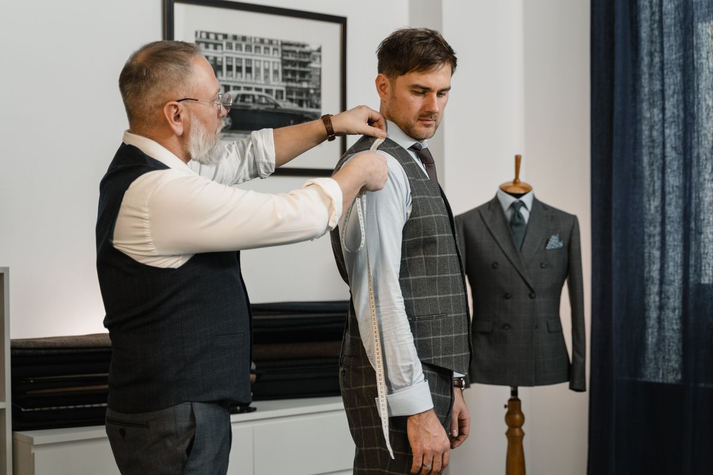
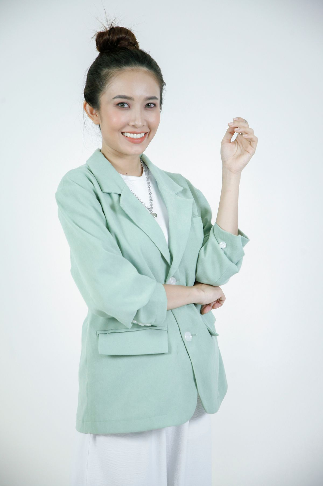
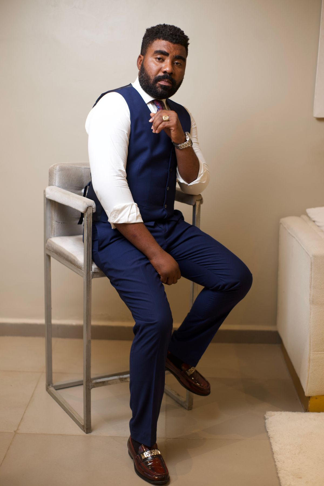
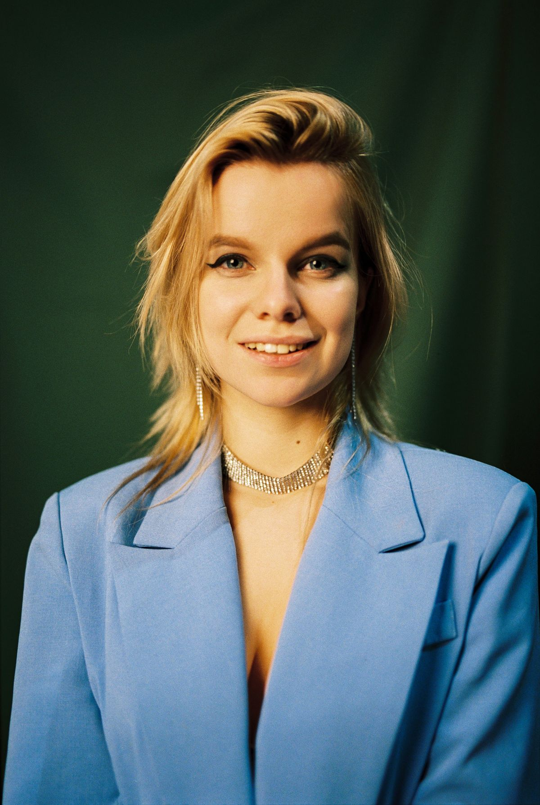
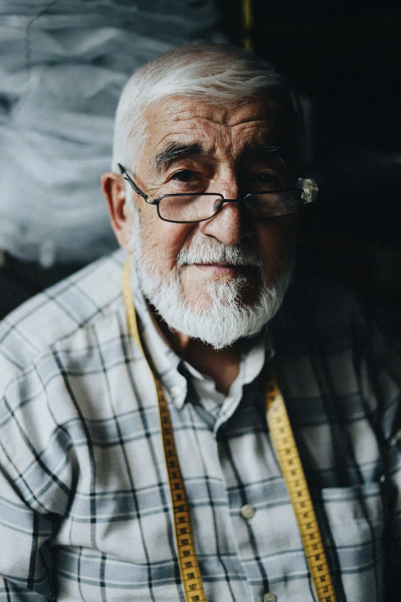

Informe suas medidas, escolha o corte, a cor e o tecido, e veja o resultado numa demonstração. No fim, uma planta técnica inicial da peça, com moldes e medidas, para o alfaiate ou a fábrica conferir. O escaneamento do corpo e o provador 3D estão a caminho.
Escolha o corpo, o corte, a cor e o tecido, depois ajuste as medidas. A peça se recompõe na hora.
Demonstração simplificada em 2D, com um modelo ilustrado. O escaneamento do corpo e o provador 3D completo ainda estão em desenvolvimento.
Sem fita métrica improvisada nem imaginação. Você enxerga o resultado antes de cortar o primeiro metro de tecido.

Digite suas medidas e montamos um modelo proporcional ao seu corpo. O escaneamento rápido pela câmera do celular está em desenvolvimento.
Hoje na demonstração: corte (italiano, inglês, trespassado), cor, tecido e medidas, com resposta imediata. Em desenvolvimento: forro, bolsos e botões personalizados.
Gere a planta técnica em PDF e os moldes em DXF, com cotas, medidas e materiais. São um rascunho para um modelista ou uma fábrica conferir.

Vai se casar e quer um terninho que realmente caia bem em seu corpo.

Sempre comprou pronto. Agora quer o terno feito para o seu corpo.

Estilista. Testa a mesma peça em dez corpos antes do protótipo.

Alfaiate. Recebe o projeto pronto e economiza horas de prova.
Personas fictícias, criadas para mostrar os usos do produto, com fotos de banco de imagens (Pexels). As pessoas retratadas não são clientes nem deram depoimentos.
Teste cortes, cores e tecidos no seu próprio corpo e decida com segurança antes de encomendar.
Em desenvolvimento: veja como cada peça se comporta em diferentes biotipos e ajuste a modelagem antes da produção.
Digite suas medidas e refine qualquer uma depois. O escaneamento pela câmera está em desenvolvimento.
Italiano, inglês, trespassado, com ombro, lapela, comprimento e caimento próprios de cada escola.
Liso, risca de giz ou xadrez, em sete cores na demonstração. A simulação de trama, brilho e peso está em desenvolvimento.
Um mapa de tensão vai mostrar onde a peça aperta, sobra ou repuxa.
Você vai comparar a mesma peça em diferentes biotipos e tamanhos em uma só tela.
Planta A3 com cotas, moldes em DXF 1:1 e dados em JSON. É um rascunho, para um modelista conferir antes do corte.
Assim como um arquiteto entrega a planta de uma casa, o Alinhavo entrega o projeto da roupa: vistas planificadas, cotas, moldes de cada peça, tabela de medidas, legenda e carimbo. A folha abaixo é calculada ao vivo a partir do terno que você montou.
Os moldes são um rascunho paramétrico calculado das suas medidas. Antes do corte, um modelista deve conferi-los. O DXF segue a convenção de camadas usada na troca de moldes, mas ainda não foi validado em programas como Gerber, Lectra ou Optitex.
Escolha uma pergunta e a resposta aparece ao lado, sem mover o resto da página.
Ainda não. A página traz uma demonstração em 2D, com um modelo ilustrado, e a planta técnica inicial. O escaneamento do corpo, o provador 3D e a análise de caimento estão em desenvolvimento.
Por enquanto, sim: você digita as medidas manualmente (peito, cintura e comprimento do paletó, na demonstração). O escaneamento pela câmera do celular está a caminho.
Não. São um rascunho paramétrico calculado das suas medidas, e um modelista deve conferi-los antes do corte. O DXF também ainda não foi validado em programas como Gerber, Lectra ou Optitex.
A planta técnica em PDF (folha A3), os moldes em DXF na escala 1:1, o desenho em SVG e os dados em JSON. Eles ficam na seção Planta técnica.
Ainda não. A ideia é conectar você a fornecedores, para pedir a peça pronta, com ajuste ou produzida do zero, mas esse recurso não está disponível. Hoje você leva o projeto ao alfaiate ou à fábrica de sua confiança.
Esse é o objetivo: testar a mesma peça em vários corpos e, depois, publicar um catálogo. A grade de tamanhos com vários corpos está em desenvolvimento; hoje você já pode exportar planta e moldes para a produção.
Deixe seu e-mail no formulário no fim desta página e entre na lista. Estamos abrindo vagas para pessoas e designers que querem testar o Alinhavo antes do lançamento.
Estamos abrindo vagas para pessoas e designers que querem testar o Alinhavo antes do lançamento.